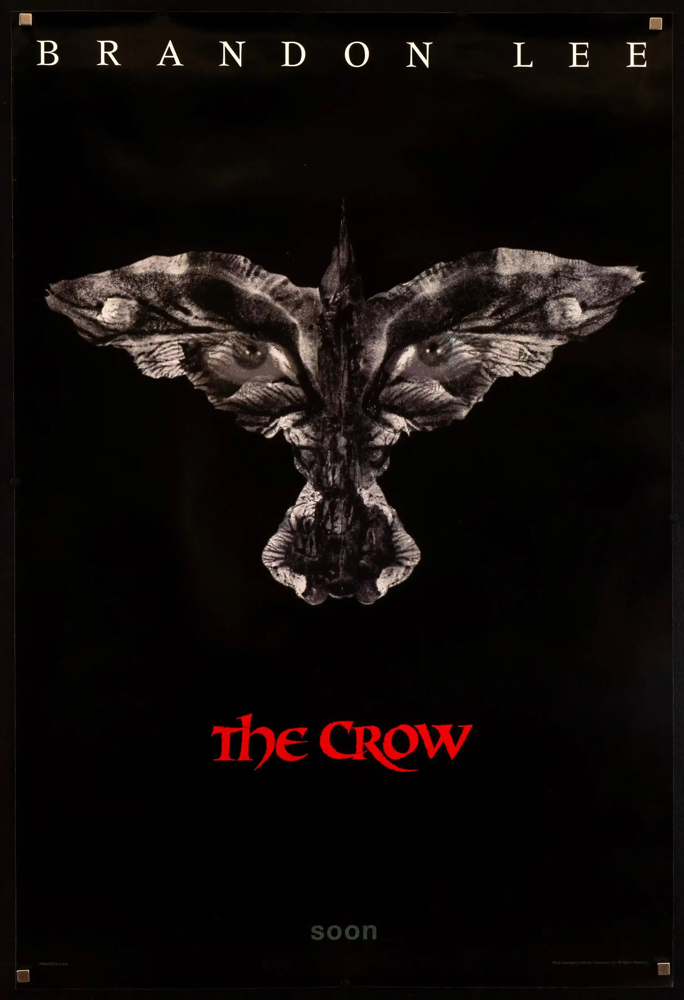
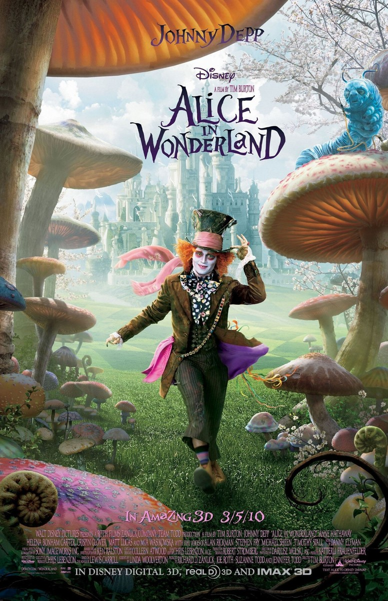
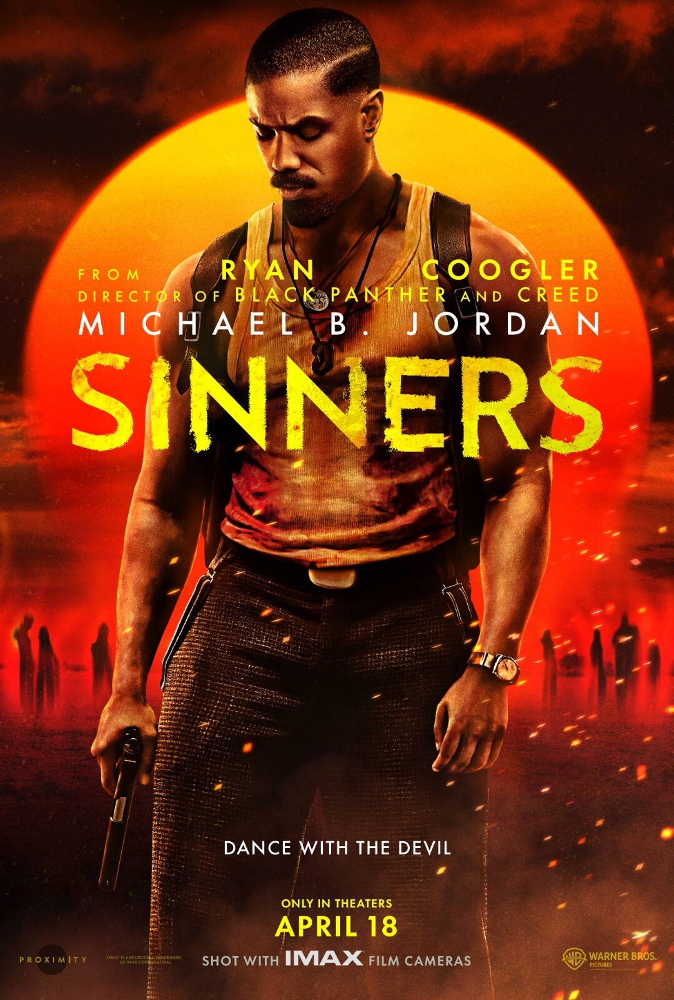
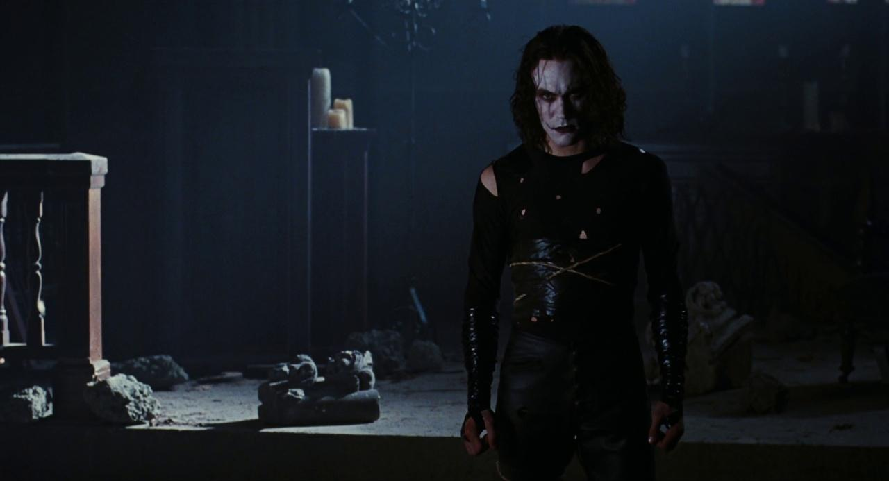
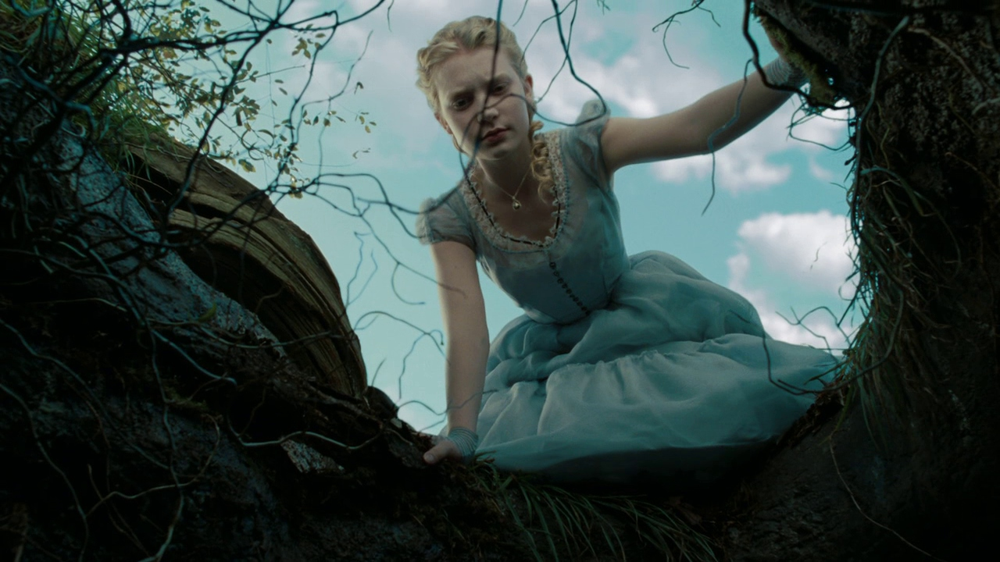
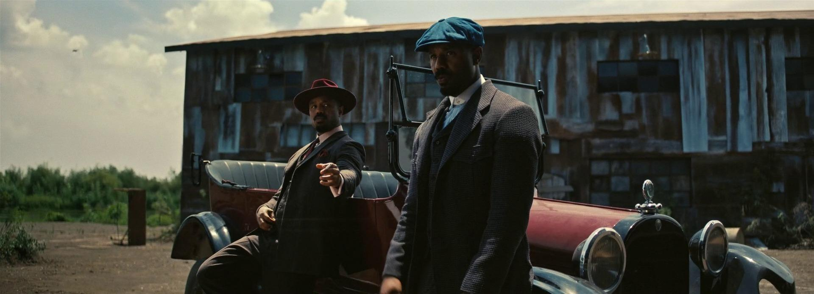

The night before his wedding, musician Eric Draven (Brandon Lee) and his fiancée are brutally murdered by members of a violent inner-city gang. On the anniversary of their death, Eric rises from the grave and assumes the gothic mantle of the Crow, a supernatural avenger. Tracking down the thugs responsible for the crimes and mercilessly murdering them, Eric eventually confronts head gangster Top Dollar (Michael Wincott) to complete his macabre mission.

In his bluray commentary, Alex Proyas said that Brandon Lee was unhappy with the way his face paint looked when the makeup department applied it to him before shooting. Lee and Proyas then agreed that it would look best if Lee applied his own makeup every night before going to bed so that when he woke up his face paint would naturally look more worn out.
Alice, an unpretentious and individual 19-year-old, is betrothed to a dunce of an English nobleman. At her engagement party, she escapes the crowd to consider whether to go through with the marriage and falls down a hole in the garden after spotting an unusual rabbit. Arriving in a strange and surreal place called "Underland," she finds herself in a world that resembles the nightmares she had as a child, filled with talking animals, villainous queens and knights, and frumious bandersnatches. Alice realizes that she is there for a reason--to conquer the horrific Jabberwocky and restore the rightful queen to her throne.

The Mad Hatter asks Alice several times, "Why is a raven like a writing desk?" This is directly from Lewis Carroll's "Alice's Adventures in Wonderland". Carroll admitted that there never was an answer to the question. He made it up without an answer. He did provide one possible answer years later after many requests from his fans for the answer: "Because it can produce a few notes, tho they are very flat; and it is nevar put with the wrong end in front." ("Nevar" = "Raven" spelled backwards. Carroll's deliberate misspelling is often erroneously "corrected", obscuring the point of the joke.) Another answer, from the American puzzler Sam Loyd: "Because Edgar Allan Poe wrote on both." Over the years, numerous others have come up with possible answers as well.
1930s. Brothers "Smoke" and "Stack" Moore return home to Clarksdale Mississippi after working for the Chicago Mafia. They buy a sawmill and a juke joint and use heir experience as gangsters to ensure that their businesses flourish. Things appear to be going well but trouble has just hit town, trouble in supernatural form.

Filming took place primarily in New Orleans and the surrounding a reas of Louisiana during the spring of 2024, meaning high heat most of the time. Wunmi Mosaku says they learned fast to follow Michael B. Jordan's lead and not complain - but maybe still vent. "What I learned from Michael was he doesn't complain. He would just kind of be very still in his very thick suits - very thick, very hot. He would be like, 'There's nothing we can do to change it, so let's just kind of push through,' because the complaining brings you down a little bit.'" Mosaku clarifies, though: "Except for the bugs. The bugs were hard to not complain about."